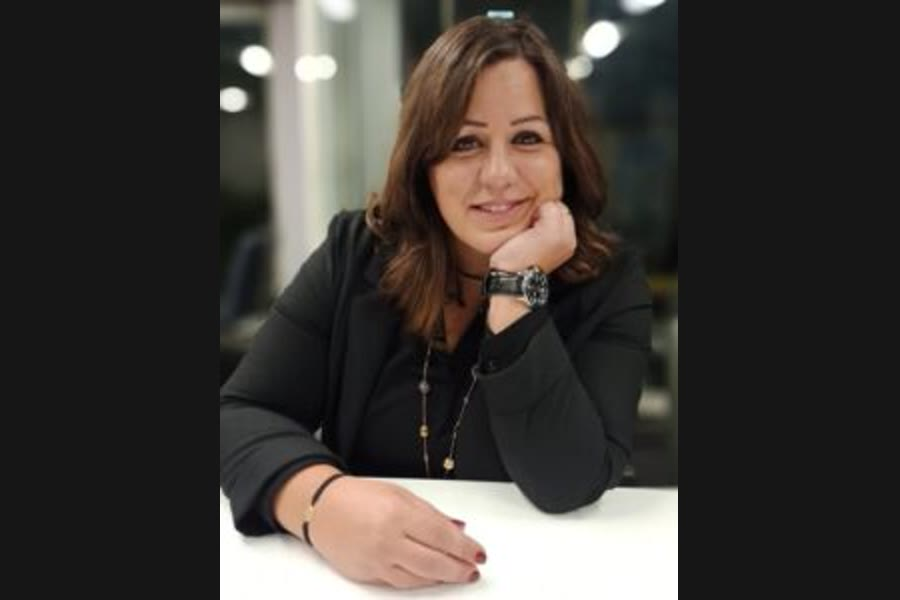
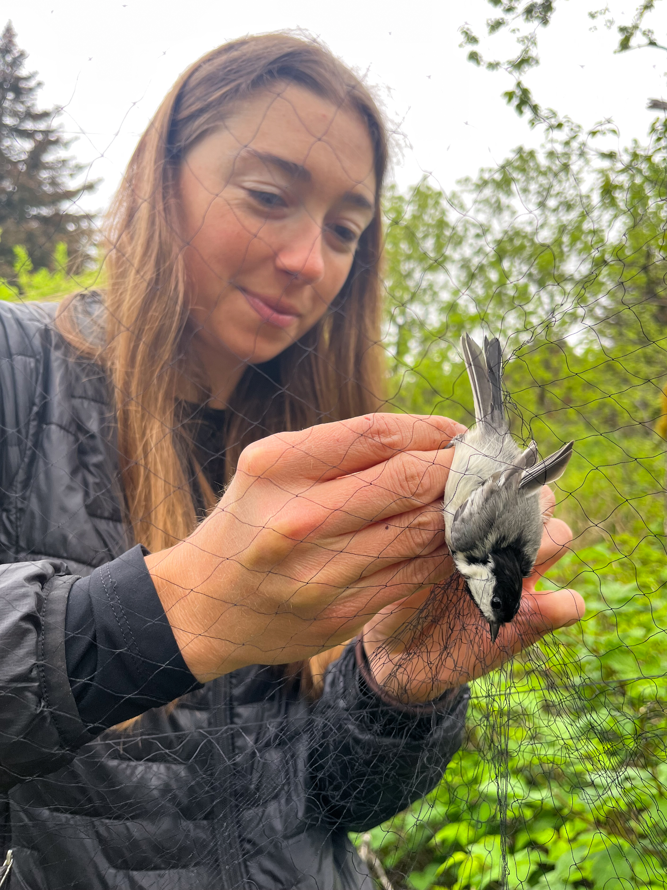

23 September 2026 The planet’s skies are losing their balance: BirdLife sounds the alarm on global flyways
22 September 2026 Countdown to the Close of the Taif Season… Gulf Eyes on the King Faisal and National Day Cups at Al-Hawiyah
20 September 2026 Widespread environmental destruction in southern Lebanon threatens one of the world’s key bird-migration flyways
19 September 2026 From Sayd’s Memory: A Journey of Awareness and Responsibility… Personalities and Voices in Nature’s Sanctuary (2016–2024)
13 September 2026 Protecting Autumn Migratory Birds in Lebanon: A Field Partnership Since 2017, Al-Khatib Affirms the Sustainable Hunter’s Role
13 September 2026 80,000 Visitors and 158 Exhibitors from 15 Countries… Suhail 2026 Closes a Decade of Passion for Hunting and Falconry
9 September 2026 Saudi Arabia Launches the Sixth Hunting Season and Tightens the Rules: 5,000 Riyals Fine for Prohibited Places
 1 October 2024 The Leading Platform for Lebanon’s and the Arab World’s Elite Hunters — and for Lovers of Hunting and Nature — Since 2012
 15 February 2023 Illegal Hunting Destroys the Hunting Hobby… Beware of Mist Nets, Birdlime, and Night Hunting
20 August 2022 Syrian Hunter Amani Al-Homsi: I Oppose Illegal Hunting… I Hope Syria Enacts a Hunting Law Fair to Nature and to the Hunter